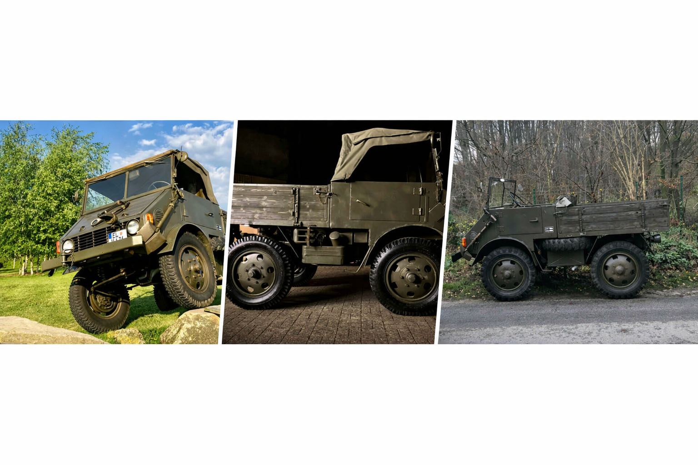

Der Unimog 2010 aus dem Baujahr 1951 gehört zu einer Serie von insgesamt 540 Fahrzeugen, die von der Schweizer Armee eingesetzt wurden. Im Jahr 1951 beschaffte die Armee 160 Stück, darunter auch dieses Fahrzeug.
Es trug das Kontrollschild M+30766 und war im kantonalen Zeughaus Freiburg (CH) stationiert. Eingesetzt wurde es als Leitungsbauwagen der Landwehr‑Telegraphenkompanie 16.
Das militärische Datenblatt ist vollständig vorhanden. Der Unimog trägt den Spitznamen „Dieseli“ und befindet sich in einem sehr gepflegten, weitgehend originalen Zustand.
← Zurück zur Übersicht